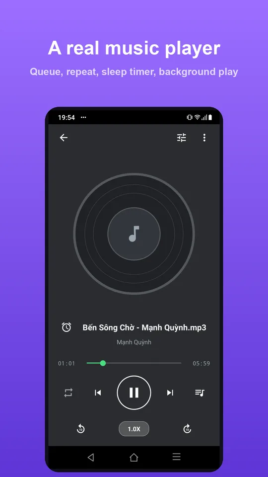

Sleep timer, playback speed and the queue: using the built-in player
After extracting audio from a video, most people do something very simple with it: listen. But what they listen to, how fast, and for how long varies a great deal. The built-in player has four controls aimed precisely at those differences — a sleep timer, playback speed, a queue and repeat modes.
1. The sleep timer

The sleep timer answers a familiar problem: you put on music or a lecture to fall asleep to, you drift off, and the phone keeps playing all night — flat battery, warm device, and no idea in the morning where you stopped.
Set the timer before you sleep and the player stops itself when it runs out. Fifteen, thirty or sixty minutes are the usual choices — a little longer than you normally take to fall asleep is about right.
The timer only stops playback; it doesn't turn off the phone or close the app, so the next morning you can pick up where you left off.
2. Playback speed
The player lets you change speed, defaulting to 1.0X. This is the control that makes the biggest difference to spoken material.
| 0.75× | Lectures in a second language, or fast and unclear recordings |
|---|---|
| 1.0× | Music — any other speed throws off how it feels |
| 1.25× – 1.5× | Podcasts, meetings, lectures on familiar material |
| 2.0× | Skimming a recording to find one specific passage |
On a ninety-minute lecture, 1.5× brings it down to sixty. After a few days that speed starts to sound normal and you'll usually want to push it further.
Music is best left at 1.0×. Speeding it up noticeably distorts the rhythm and the feel of the piece.
3. The queue

The queue is what plays next. Line up a few podcast episodes or a run of lectures and you don't have to touch the phone again until they're done.
That's particularly useful while driving or exercising — two situations where unlocking the phone to pick the next track is both annoying and a bad idea.
The current track and everything behind it appear in one list, so you can see at a glance how much you have left.
4. Repeat and shuffle
Three repeat states cover three different habits:
- Off — play the list through and stop. Right for podcasts and lectures.
- Repeat all — return to the first track at the end. Right when you want continuous background music.
- Repeat one — play a single track over and over. Useful for studying a dialogue, learning a song or transcribing lyrics.
Shuffle randomises the order, which suits a large music library but is worth switching off for anything sequential, like a lecture series.
5. The library and cover art
Every file you extract shows up in the app's library with cover art taken from a frame of the source video. That makes the list scannable, instead of a column of near-identical filenames.
The artwork is written into the MP3's own metadata tags, so it still appears correctly if you open the file in another player or copy it to a computer.
6. Background playback and lock-screen controls
Playback continues when you switch to another app or turn off the screen. Play, pause and skip appear in the notification area and on the lock screen, so you can control it without reopening the app.
A combination that works: podcast at 1.5×, three episodes queued, a 45-minute sleep timer, repeat off. Set it once and put the phone down.
Frequently asked questions
Does the sleep timer turn off the phone?
No. It only stops playback when the time runs out. The phone carries on as normal and you can resume from where it stopped.
Does changing the speed distort the voice?
Not noticeably between 0.75× and 2.0×. Pitch is preserved, so speech still sounds natural; at very high speeds words start running together.
Does playback continue with the screen off?
Yes. The player runs in the background, with controls in the notification area and on the lock screen.
Does the player open music already on my device?
The library collects the files you've extracted with the app, complete with cover art taken from the source video.
Why keep music at 1.0×?
Because a piece of music's rhythm and feel are tied to its original tempo. Speeding up works beautifully for speech and makes music sound forced.
When is repeat-one useful?
When you're studying a passage in another language, learning along with a song, or transcribing lyrics — anything that needs the same section again and again.
Have a listen
Extract audio from video and play it right there, with a sleep timer and speed control.
Get it on Google Play Features